数字滤波器和数字锁相放大器
说明：
- 总结数字滤波器、数字锁相放大器相关的算法以及使用
- python脚本在
JupyterScript文件夹中 - 日期：2020.6.23
一、数字滤波器
- 从下面的结果可以看出，滤波器有很明显的相移
- 需要高阶滤波器时，sos filter的数值稳定性更好，更加通用
1.1 数字低通滤波器
使用方式：
x#数字低通滤波器的使用order = 8cutoff = 150#butter filterlp_b, lp_a = signal.butter(order, cutoff, 'low', fs=fs) signal_out = signal.lfilter(lp_b, lp_a, signal_in)#sos filtersos = signal.butter(order, cutoff, btype='low', fs=fs, output='sos')signal_out = signal.sosfilt(sos, signal_in)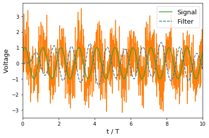
1.2 数字带通滤波器
使用方式：
xxxxxxxxxx#带通滤波order = 8lowcut = 80highcut = 120#sos filtersos = signal.butter(order, [lowcut, highcut], btype='band', fs=fs, output='sos')signal_out = signal.sosfilt(sos, signal_vec)这里没有使用signal.lfilter，因为高阶时，该方法数值不稳定，出现了发散。
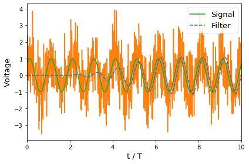
二、数字锁相放大器
带有噪声的交流信号：
其中，表示噪声
与参照信号相乘：
上面的操作可以看成是对数据做了一次映射，映射结果的组成：直流 + 交流 。其中，直流是我们的目标值，而交流部分包含噪声，倍频（通常信号源有直流分量，所以与参照信号相乘后，还会形成新的基频成分）。最后，通过求平均，除去交流部分，留下直流分量。从这个角度来看，锁相放大器能测量弱信号，依然是根据“多次实验求平均”这一基本原理来实现的（相当朴素啊）。
通常，锁相放大器还会将上面的结果通过低通滤波器，然后才输出结果。如果是数字锁相放大器，其实都可以不用进行滤波，直接将上面与参照信号相乘的结果进行求平均，输出结果。因为低通滤波器不会影响数据中的直流分量，该直流分量在上面的乘法操作后就被确定了，无法改变。当然，如果是模拟锁相放大器，是必须要低通滤波器的，其作用就是对数据求平均，并方便最终读数。至于为什么数字锁相放大器要使用低通滤波器，可能是有其他方面的考虑，比如输出数字的变化可以直观反映待测频率附近的噪声大小。又或者这样的锁相放大器可以等效为带有放大效果的带通滤波器？
2.1 生成带噪声的电压信号
xxxxxxxxxx#生成带噪声的信号def signal_func(t_vec, freq, amplitude, phase, noise_amplitude): signal_vec = amplitude*np.sin(2*np.pi*freq*t_vec + phase/180*np.pi) noise_vec = np.random.normal(0, noise_amplitude, len(t_vec)) return signal_vec + noise_vec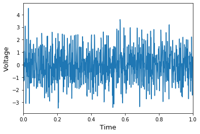
2.2 相乘后直接平均
xxxxxxxxxx#与参照函数相乘，然后平均X = np.average(2*signal_vec*np.sin(2*np.pi*t_vec*freq))Y = np.average(2*signal_vec*np.cos(2*np.pi*t_vec*freq))print('R: ', np.abs(X+1j*Y))print('Phase: ', np.angle(X+1j*Y)*180/np.pi)Output:
xxxxxxxxxxR: 0.9813024743316513Phase: 39.04809862524686
2.3 相乘+滤波
xxxxxxxxxx#low pass filterorder = 4cutoff = 20b,a = signal.butter(order, cutoff, 'low', fs=fs) sX = 2*signal.lfilter(b,a,signal_vec*np.sin(2*np.pi*t_vec*freq)) #相乘并滤波sY = 2*signal.lfilter(b,a,signal_vec*np.cos(2*np.pi*t_vec*freq)) #相乘并滤波#averageX = np.average(sX)Y = np.average(sY)print('R: ', np.abs(X+1j*Y))print('Phase: ', np.angle(X+1j*Y)*180/np.pi)Output:
xxxxxxxxxxR: 0.9640100681479425Phase: 39.31475856903451
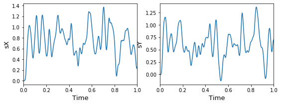
三、模拟实验
3.1 用锁相放大器测试数字低通滤波器
将周期信号经过低通滤波器处理，再用数字锁相放大器测量输出信号。
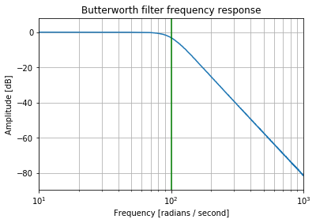
3.2 用锁相放大器测试数字带通滤波器
将周期信号经过带通滤波器处理，再用数字锁相放大器测量输出信号。
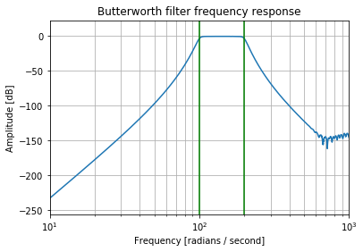
3.3 模拟锁相放大器测量周期信号的波形
说明：
完整代码见：
JupyterScript/lockin_periodicWaveformRecover.ipynb #数值模拟该过程
JupyterScript/SquareWaveformRecover_AWG_UHF.ipynb
#使用仪器AWG（任意波形发生器）和UHF（锁相放大器）执行该实验
日期：2020.12.9
周期信号傅里叶级数展开：
其中，为锁相的积分时间，应该远大于。
傅里叶级数与锁相测量结果的关系：
其中，，即为锁相的测量结果。
3.3.1. 待测量的方波信号
xxxxxxxxxxdef squareSmooth_func(t_vec, T, V0): delta_t = T/50 return 1/(1+np.exp( (t_vec-T/4*3)/delta_t)) * (1 - 1/(1+np.exp( (t_vec-T/4)/delta_t)) ) * V0def squarePeriodic_func(t_vec, T, V0): N_period = int(float(np.round( ( (t_vec[-1] - t_vec[0]) / T ) ))) N_singleT= int( t_vec.size / N_period) #定义单个周期中的信号 tSingle_vec = np.linspace(0, T, N_singleT+1)[:-1] #扔掉末尾的点 VSingle_vec = squareSmooth_func(tSingle_vec, T, V0) #将所有周期的信号连接起来 output = np.array([]) for n in range(N_period): output = np.concatenate( (output, VSingle_vec) ) return output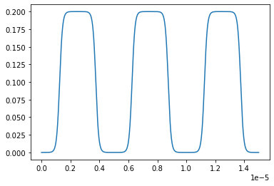
3.3.2. 锁相测量 Cn
xxxxxxxxxxdef Lockin_XY_func(signal_vec, t_vec, freq): sX = 2*signal_vec*np.sin(2*np.pi*t_vec*freq) sY = 2*signal_vec*np.cos(2*np.pi*t_vec*freq) sX = np.sum(sX) / len(sX) sY = np.sum(sY) / len(sY) return sX,sYSignal
xxxxxxxxxxt_vec = np.linspace(0,T*1000, 100001)[:-1]g_vec = squarePeriodic_func(t_vec, T, V0)Measurement
xxxxxxxxxxNn = 10Cn_vec = np.zeros(Nn, dtype=complex)xxxxxxxxxxCn_vec[0] = np.average(g_vec)xxxxxxxxxx#AC measurementfor n in range(1,Nn): #UHF_ready_check() [X, Y] = Lockin_XY_func(g_vec, t_vec, n*freq) Cn_vec[n] = 0.5j*X + 0.5*Yxxxxxxxxxx[X, Y] = Lockin_XY_func(g_vec, t_vec, 1*freq)
3.3.3. 还原信号
xxxxxxxxxxsquareRecover_vec = np.zeros(t_vec.size)#DC recoversquareRecover_vec = squareRecover_vec + Cn_vec[0]#AC recoverfor n in range(1, Cn_vec.size): omega = 2*np.pi*freq Cn = Cn_vec[n] squareRecover_vec = squareRecover_vec + np.exp(-1j*n*omega*t_vec) * Cn + np.exp(1j*n*omega*t_vec) * Cn.conj()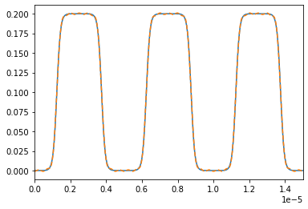
四、补充内容
4.1 数据处理时，直接平均与滤波后再平均？
如果信号的组成是直流+噪声：，用采集卡测量到了一组值。将测量数据通过数字低通滤波器处理，下面是处理前和处理后的数据分布。看起来滤波后的数据分布更窄，噪声更小。是不是通过低通滤波器后，再对数据求平均，得到的值更准确？
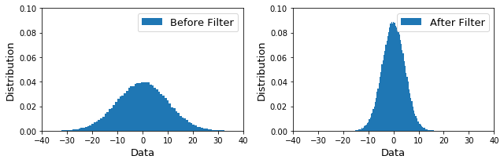
结论：
- 两种方式得到的直流分量是一样的，数字滤波器不会提高精度
- 只有增加测量次数，才能提高精度，使测量结果向真实值逼近
原因：
因为数字低通滤波器不会改变中的直流分量，只是将该组数据的分布向均值靠拢，看起来噪声变小，但均值不会变化。上面两个分布的宽度不一样，但其均值（中心值）是一样的。所以在已经得到了测量数据后，使用数字滤波器的测量方法并不能减小直流误差。
下面是通过实验数据的方差来证明两种方式的精度确实是一样的。图中，N表示每次实验中，采集的数据点。然后后重复实验，查看测量的分布方差随实验数据量的变化。
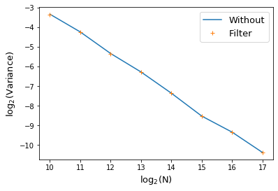
4.2 一阶RC滤波器

理论分析：
- https://www.embeddedrelated.com/showarticle/590.php
- 从时域微分方程以及Transfer Function的角度分析该系统
- Transfer Function应该是拉普拉斯变换方面的，暂时跳过
算法实现（数字滤波器）：
4.3 高阶数字滤波器的数值稳定性
结论：在使用高阶数字滤波器时，sosfilt的稳定性更好，butter可能会发散
资料：https://stackoverflow.com/questions/21862777/bandpass-butterworth-filter-frequencies-in-scipy
Note：
- Don't use
b, a = butterfor high-order filters, whether in Matlab or SciPy or Octave. Transfer function format has numerical stability problems, because some of the coefficients are very large while others are very small. This is why we changed the filter design functions to use zpk format internally. To see the benefits of this, you need to usez, p, k = butter(output='zpk')and then work with poles and zeros instead of numerator and denominator - Don't do high-order digital filters in a single stage. This is a bad idea no matter what software or hardware you're implementing them on. Typically it's best to break them up into second-order sections. In Matlab, you can use zp2sos to generate these automatically. In SciPy, you can use
sos = butter(output='sos')and then filter usingsosfilt()orsosfiltfilt(). This is the recommended way to filter for most applications
xxxxxxxxxximport numpy as npfrom scipy import signalimport matplotlib.pyplot as pltfrom tqdm import tqdmdef signal_func(t_vec, freq): return np.sin(2*np.pi*freq*t_vec) #设置带通滤波器order = 10lowcut = 100highcut = 200#输入信号freq = 1000tf = 1fs = freq*4Nt = tf*fs+1t_vec = np.linspace(0, tf, Nt)signal_in = signal_func(t_vec, freq)#lfilter滤波b, a = signal.butter(order, [lowcut, highcut], btype='band', fs=fs)signalBa_out = signal.lfilter(b, a, signal_in)#soffilt滤波sos = signal.butter(order, [lowcut, highcut], btype='band', fs=fs, output='sos')signalSOS_out = signal.sosfilt(sos, signal_in)#==== plot ====plt.figure(figsize=(10,4))plt.subplot(1,2,1)plt.plot(t_vec, signalBa_out)plt.xlabel('t', fontsize=13)plt.ylabel('Signal Out', fontsize=13)plt.title('lfilter', fontsize=13)plt.subplot(1,2,2)plt.plot(t_vec, signalSOS_out)plt.xlabel('t', fontsize=13)plt.ylabel('Signal Out', fontsize=13)plt.title('sosfilter', fontsize=13)plt.tight_layout()#plt.savefig("pic_name.png", format='png', dpi=200)计算结果：
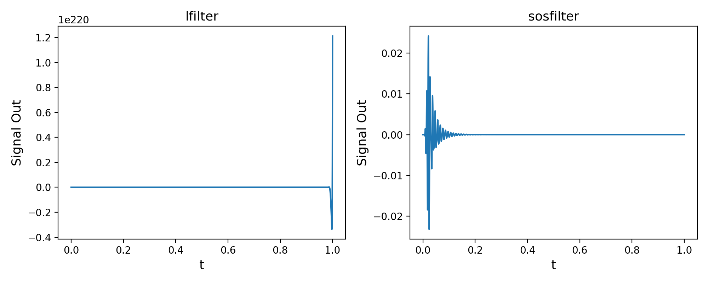
4.4 lfilter的算法
https://docs.scipy.org/doc/scipy/reference/generated/scipy.signal.lfilter.html
xxxxxxxxxx'''#algrithm:a[0]*y[n] = b[0]*x[n] + b[1]*x[n-1] + ... + b[M]*x[n-M] - a[1]*y[n-1] - ... - a[N]*y[n-N]'''import numpy as npfrom scipy import signaldef my_lfilter(b,a, sig_vec): #a[0] = 1 a = a/a[0] b = b/a[0] #filter output = np.zeros(len(sig_vec)) for n in range(len(sig_vec)): for na in range(1,len(a)): if ((n-na)<0): break output[n] = output[n] - a[na]*output[n-na] for nb in range(len(b)): if ((n-nb)<0): break output[n] = output[n] + b[nb]*sig_vec[n-nb] return output#signalNt = 6sig_vec = np.random.random(Nt)#filter parametersLP_order = 1cutoff = 0.1b, a = signal.butter(LP_order, cutoff, 'low', analog=False)#filter the signalprint("Numpy lfilter: ", signal.lfilter(b,a,sig_vec))print("My lfilter: ", my_lfilter(b,a,sig_vec))